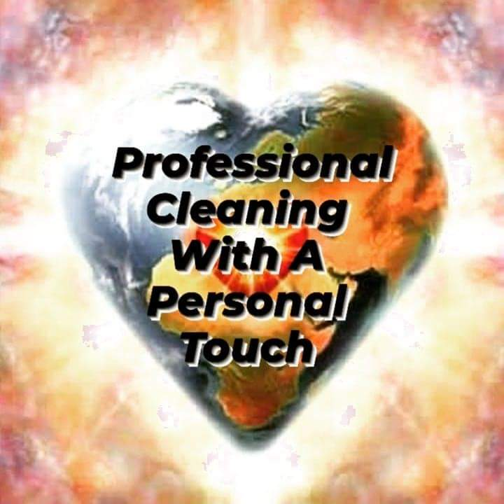

I have learned different skills in different types of work. I have been
a housekeeper, and I moved up quickly to assistant manager. For a while
I was a janitor at Hanes Brands warehouse's, eventually I became lead
there and couldn't grow anymore. Now I am a software enginer, it's still
new to me but I'm ambitious.
Professional Cleaning w/ A Personal Touch
I have worked here for 5 years in this time I learned how to clean; all
different floors, fridges, ovens, cabinets inside & out, walls, windows,
bathrooms, baseboards, ceiling fans, anything & everything top to
bottom. Thanks to this job I learned how to manages clients, staff,
books, supplies, and prepare taxes. I also learned how to best help
clients in their search.

Sarver Cleaning Services
While working for this company I was in charge of keeping a whole
warehouse clean with the help of 2 to 4 people. The turn over rate was
high so we couldn't keep people.I worked here for a year as team lead.
Sometimes I would have to go between 2 different warehouses to help out
the other team. My hardest task was going between my bosses and the
Hanes employees over us trying to serve everyone's needs. From there I
would divide up the work between the people present at the time. My key
takeaways this experence are; time management, having a good team is the
best, hard work shows, effective communication, how to motivate,
organization, decision making, confidence, and humility.
Temple Coding
At temple coding I was taught HTML, CSS, JavaScript, React, advanced
Python, relational databases, API REST development and they prepared me
for the working world.